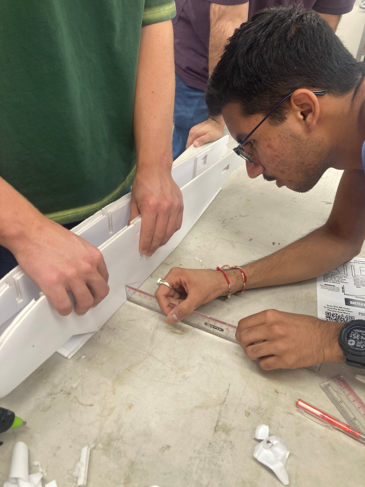

- Course
- ARO 1011L, Cal Poly Pomona
- Role
- Team Lead (5-Student Team)
- Airframe
- FT Tutor MKR2 (720 g / 1.587 lbf)
- Test Scope
- Thrust Stand + 200 ft Course

Airframe Fabrication & Radio Integration
As team lead for a five-student group, I split the build into parallel wing and fuselage sub-assemblies while managing final integration. Moving transmitter binding to an isolated shop corner eliminated cross-talk from neighboring radios, and reversed elevator/rudder channels on initial bench power-up were fixed via transmitter channel-reverse settings.



Propulsion & Avionics Layout
A nose-mounted brushless motor bolted to a plywood firewall drew power from a 3S LiPo pack (Tattu 1300 mAh, 45C, 11.1 V nominal), with servo and ESC leads routed through the wing root into the fuselage bay. Re-shimming the firewall to zero out thrust-line offset and keeping hot-glue fillets consistent were the main mechanical adjustments before flight.


Static Thrust & Power Bench Calibration
Mounted on a REDBIRD MCX thrust stand, we stepped throttle in 25% increments to measure static thrust, DC bus voltage, and motor current, estimating shaft power at an assumed η = 0.85 propeller efficiency. Bus voltage dropped from 9.71 V to 7.50 V at 75%–100% throttle due to LiPo internal-resistance sag under high current draw.
| Throttle | Thrust (lbf) | VDC (V) | Imotor (A) | Pelec (W) | Pshaft (W) |
|---|---|---|---|---|---|
| 25% | 0.287 | 9.25 | 4.00 | 37.00 | 31.45 |
| 50% | 0.606 | 9.71 | 8.50 | 82.50 | 70.13 |
| 75% | 1.157 | 7.50 | 14.00 | 105.00 | 89.25 |
| 100% | 1.984 | 7.50 | 18.00 | 135.00 | 114.75 |


200 ft Free-Flight Course & Aerodynamic Reduction
Using measured wing geometry (b = 41.5 in, c = 8.5 in, S ≈ 2.45 ft², AR ≈ 4.88) and mass (720 g / 1.587 lbf), we flew seven steady passes at ~65% throttle across a 200 ft cone course, averaging Vavg = 26.652 ft/s (7.504 s per pass). Without onboard air-data sensors, lift and drag were backed out from steady-level-flight equilibrium (L = W, D = Pshaft/Vavg).
| Aircraft Weight, W | 1.587 lbf |
|---|---|
| Bench-Inferred Cruise Thrust, T | 1.009 lbf |
| Power-Derived Drag, D | 0.908 lbf |
| Average Propulsive Power | ≈ 90 W |
| Cruise Lift Coefficient, CL | 0.865 |
| Cruise Drag Coefficient, CD | 0.449 |
| Lift-to-Drag Ratio, L/D | 1.93 |
| Max Static Thrust-to-Weight, Tmax/W | 1.250 |
Bench-inferred thrust exceeded calculated drag by 0.101 lbf (an 11.1% residual against the lab’s ±10% tolerance band), pointing to mild unmodeled climb or longitudinal acceleration during passes. Key scatter sources included manual stopwatch timing (±0.1–0.2 s), wind gusts, constant η = 0.85 assumption, and foam glue-joint asymmetries—all addressable on a repeat run using reciprocal upwind/downwind passes and onboard airspeed logging.
- Foam Airframe Fabrication
- RC Avionics & ESC Integration
- Static Thrust Stand Calibration
- Flight-Test Data Reduction
- CL / CD & L/D Analysis
- Team Leadership